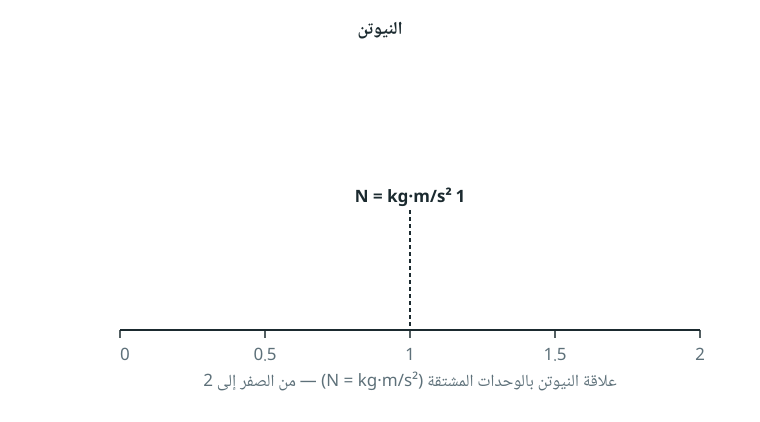

النيوتن
Newton
النيوتن وحدة القوة في النظام الدولي، ورمزه N، ويساوي كيلوغراماً في متر لكل ثانية مربعة. هو القوة التي تُكسب كتلة كيلوغرام واحد تسارعاً متراً لكل ثانية مربعة.
النيوتن هو وحدة القوة في النظام الدولي للوحدات، ورمزه N. وهو وحدة مشتقة تُعرَّف بأنها القوة التي تُكسب كتلة مقدارها كيلوغرام واحد تسارعاً مقداره متر واحد لكل ثانية مربعة، أي 1 N = 1 kg·m/s². ويُعبَّر عنها بالوحدات الأساسية كيلوغرام·متر/ثانية². والقوة كمية متجهة لها مقدار واتجاه، ولا تُجمع جمعاً عددياً بلا مراعاة الاتجاه. والنيوتن وحدة صغيرة على المقياس اليومي: وزن كتلة كيلوغرام واحد على سطح الأرض نحو 9.806 65 نيوتن، لأن تسارع الجذب الأرضي القياسي g₀ = 9.806 65 m/s². مثال: كتلة 10 كغ معلّقة في حبل ساكن تشدّ الحبل بقوة 98.066 5 نيوتن، وهي وزنها.
كيف تعمل الظاهرة؟
القوة تغيّر حالة حركة الجسم: قانون نيوتن الثاني يقول إن القوة الصافية على جسم تساوي حاصل ضرب كتلته في تسارعه. فحين تؤثر قوة على كتلة، تتغير سرعتها بمعدل يتناسب عكسياً مع الكتلة. والقوة كمية متجهة، فمجموع القوى يُحسب جمعاً اتجاهياً، وقد تتلاشى قوى متعارضة فيبقى الجسم في توازن. وفي الأنظمة الحقيقية تُضاف قوى الاحتكاك والمقاومة، فتصير القوة الصافية أقل من القوة المؤثرة. ولذلك فالنيوتن يقيس القوة الصافية المؤثرة، لا القوة المبذولة وحدها.
العلاقة بالأرقام
1 N = 1 kg·m/s². وF = m·a. والوزن W = m·g مع g₀ = 9.806 65 m/s². والشغل W = F·d·cosθ. والعزم τ = F·d. والزخم p = m·v، والقوة F = dp/dt. مثال: كتلة 10 kg وزنها W = 10×9.806 65 = 98.066 5 N. وكتلة 2 kg تحت تسارع 3 m/s² تحتاج F = 6 N. ورفع 50 kg مسافة 2 m يحتاج شغلاً W = 50×9.806 65×2 = 980.7 J.
مفاهيم متقاربة
النيوتن قوة والكيلوغرام كتلة: الخلط بينهما أشيع خطأ في وحدات الوزن. والوزن قوة تختلف باختلاف g، والكتلة مقدار ثابت. والنيوتن ليس الجول: الجول طاقة تساوي نيوتن·متر، فالوحدتان متشابهتان في التفكيك لكن مختلفتان في المعنى. والنيوتن ليس الباسكال: الباسكال نيوتن لكل متر مربع. وعزم القوة وحدته نيوتن·متر وليس نيوتن، لأن العزم له ذراع.
حدود التطبيق
قانون نيوتن الثاني بصيغته F = m·a تقريب عند السرعات القريبة من سرعة الضوء، ويُستبدل به في النسبية الخاصة علاقة الزخم. وفي الميكانيكا الكمّية لا يبقى مسار الجسيم محدداً، فلا تُطبَّق المعادلة بالمعنى الكلاسيكي. وفي الأنظمة الدوارة الكبيرة يجب إضافة قوى القصور (قوة كوريوليس والطرد المركزي) عند الوصف في الإطار الدوّار. ولا تُجمع القوى جمعاً عددياً بلا مراعاة الاتجاه.

| الكمية | القيمة | المصدر |
|---|---|---|
| علاقة النيوتن بالوحدات المشتقة | 1 N = kg·m/s² | [1] |
| تسارع الجذب الأرضي القياسي g₀ | 9.806 65 m/s² | [2] |
المصادر
- 1 The International System of Units (SI), 9th edition (2019) — BIPM — Bureau International des Poids et Mesures (2019). www.bipm.org/en/publications/si-brochure · اطُّلع عليه 2026-11-21
- 2 The International System of Units (SI), 9th edition (2019) — BIPM — Bureau International des Poids et Mesures (2019). www.bipm.org/en/publications/si-brochure · اطُّلع عليه 2026-11-21
- 3 The International System of Units (SI), 9th edition (2019) — BIPM — Bureau International des Poids et Mesures (2019). www.bipm.org/en/publications/si-brochure · اطُّلع عليه 2026-11-21
استشهد بهذا المصطلح
الصيغتان مبنيتان من بيانات الصفحة نفسها: العنوان والتاريخ ورابط النسخة المنشورة.
النيوتن — Newton. (2026). ديوان المعرفة — انفراد. https://infiradev.com/diwan/terms/term-newton.html
@misc{term-newton2026,
title = {النيوتن},
titleaddon = {Newton},
howpublished = {{ديوان المعرفة — انفراد} — مرجع علمي عربي},
year = {2026},
url = {https://infiradev.com/diwan/terms/term-newton.html},
urldate = {2026-11-26},
note = {مراجعة علمية: hermes (مراجعة معتمدة 2026-11-26)}
}
راجعه: hermes (مراجعة معتمدة 2026-11-26) · 2026-11-26 · آخر تحديث 2026-11-21